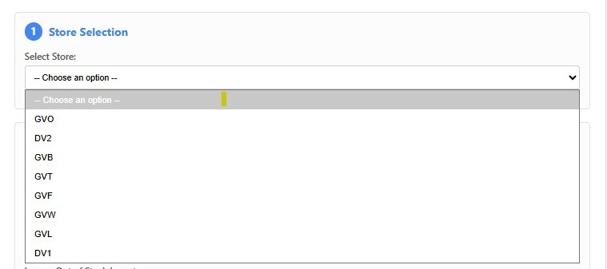
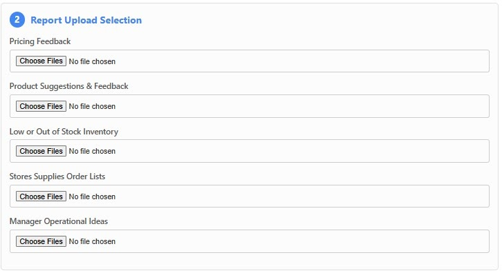
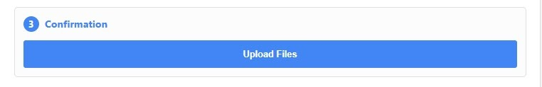
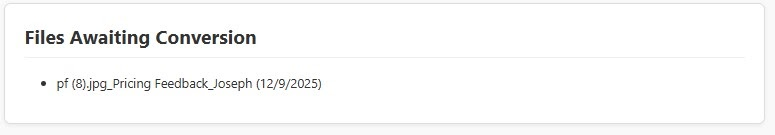
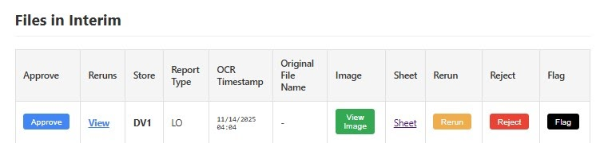
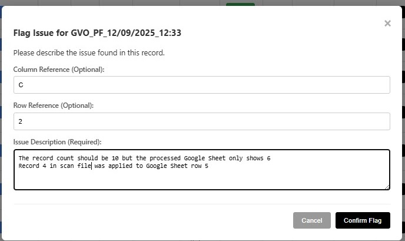

GVVSS Reports Portal – User Manual
Version 1.0 : 12-2025
Quick Tip
Scanned photos must be vertical, have readable handwriting, and adequate lighting for the OCR to work perfectly!
Escalation Notice
Do not escalate an issue until you have clicked the Rerun button first.
Scope: This manual provides step-by-step instructions on how to use the GVVSS OCR Processing System, from capturing data at the store level to uploading files, reviewing OCR output, and triggering data consolidation.
Quick Links: * Production Website * Video Demo
A. Overview of the System
The GVVSS OCR Processing System streamlines how store-submitted forms are captured, processed, and transformed into actionable data. The process involves a combination of manual steps (performed by store teams and uploaders) and automated steps (performed by Google Apps Script and the Reports Portal).
This manual covers the four main phases of the workflow: 1. Data Capture 2. File Upload 3. OCR Processing (Automated) 4. Data Integration
B. Step-by-Step Process
Step 1: Data Capture
- Responsibility: Store Staff (PA: GVB/GVW/GVF | FL: GVL/GVO/GVT)
Description: Each store fills out the standard printed forms used for weekly operations monitoring, including: * Pricing Feedback * Product Suggestion & Feedback * Low / Out-of-Stock Inventory * Store Supplies & Order List * Manager Operational Ideas
End-of-Week Procedure: 1. Staff complete all required forms throughout the week. 2. At the end of the week, the staff assigned to documentation takes clear photos of each filled-out form using a mobile device. 3. Photos must show the entire form, scanned photos must be vertical, have readable handwriting, and adequate lighting.
Step 2: File Upload
- Responsibility: Designated Uploader per Branch
Description: After receiving the scanned photos from store staff, the uploader transfers them into the OCR system through the Reports Portal Interface.
Process: 1. Verify each scanned file: Ensure correct file format (JPG/PNG), store branch, and form type. 2. Go to the Reports Portal Interface. 3. The system interprets user credentials from the email address utilized when opening the Reports Portal Interface. * The system auto-validates user access. * The system automatically sets the state for users with GM-level access, while staff granted upload permissions are automatically assigned their respective store code. * A GM designated at the state level is granted access to all stores under that state. * Super user or Dev users can access all stores regardless of state. 4. In the upload interface: * Select the Store Code.

* Choose the **Form Type** that corresponds to the scanned files you are uploading.

- Click "UPLOAD" for the system to commence the OCR processing of the uploaded scan images.

Step 3: OCR Processing - Automated
- Responsibility: System (Google Apps Script)
Description: Once files are uploaded, the system automatically processes the images.
Behind the Scenes (For Awareness):
1. Image files are stored in the /Raw Images directory.
2. Google Drive OCR converts each image into a Google Sheet containing extracted text.
3. Google Apps Script automates: file detection, conversion, and storing results in /OCR Output.
Files Awaiting Conversion: Users will see the files that are being converted in the "Files Awaiting Conversion" section. No action is required from the user for this step. Each scanned file takes about 20 minutes to process.

Step 4: Data Integration (Files in Interim)
- Responsibility: Reviewer (GM)
Description: After OCR conversion, the reviewer verifies the output and finalizes the data transfer into the Action Item master sheet.
Files In Interim (Column Definitions): (...your list of definitions like Approve, Reruns, Store, etc...) * Flag: Used to document details when escalating valid system-related issues; details are sent immediately to Support Contacts.

* Approve: (Trigger Integration Button) Triggers the system to transfer all verified entries into the Action Item Database for tracking and reporting. * Reruns: Displays the version history of the processed Google Sheets. This allows reviewers to compare results whenever a “Rerun” is executed. * Store: The chosen store during the initial upload process. * Report Type: Shows the form type selected during the initial upload process. * OCR Timestamp: Records the exact date and time when the scanned image file was uploaded and processed through OCR. * Original Filename: Displays the exact file name of the uploaded image. * Image: Contains a copy of the scanned image for reference during review. * Sheet: Links to the processed Google Sheet that reviewers should verify prior to clicking “Approve". * Rerun: Reprocesses the scanned file and generates a new version of the processed Google Sheet. Similar to the initial OCR processing, this requires approximately 20 minutes. * Reject: Once selected, this disables the “Approve,” “Sheet,” “Rerun,” and “Flag” buttons, indicating that the record will not proceed for processing. * Flag: Used to document details when escalating valid system-related issues; details are sent immediately to Support Contacts.Procedure: 1. Open the processed Google Sheets files by clicking on "Sheet".

2. Review for minor OCR errors (typographical misreads, formatting issues). 3. Make necessary corrections that are considered "Not a System Error". (Refer to the Escalation Guidelines to know what constitutes a non-system error). 4. For any “Valid System Issue” (as defined in Escalation Guidelines), first click "Rerun" to trigger the system to reprocess the scanned image. * If the issue persists or worsens after the Rerun, click Flag to formally escalate the problem to the designated Support Contacts. Select Confirm Flag to finalize the escalation. 5. Click Approve (Trigger Integration) for processed Google Sheets that are not flagged. * The system transfers all verified entries into the Action Item Database (Jordan) for tracking and reporting.C. Roles & Responsibilities
| Role | Task |
|---|---|
| Store Staff | Fill forms, take weekly photos |
| Designated Uploader | Upload correct scanned files |
| System (Apps Script) | OCR conversion |
| Reviewer | Validate OCR data, trigger integration |
| Action Item Owner | Uses consolidated data for reporting |
D. Troubleshooting & Common Issues
Unable to access Upload Interface Portal
- Verify that your internet connection is stable.
- Attempt to open the portal using a different device or an alternative network connection.
- Confirm that you are using the same email address that was submitted and approved for portal access.
- Ensure that browser settings (e.g., pop-up blockers, cookies, or script restrictions) are not preventing the portal from loading properly.
Upload Rejected
- Confirm that the scanned file is in an accepted image format (JPEG or HEIC for iPhone).
- Ensure the file size does not exceed the 10MB limit.
- Verify that the uploaded image contains only one page and is not a multi-page file.
- Check that your internet connection is stable and not experiencing slow upload speeds.
- Retry the upload after closing and reopening the portal, in case the previous session encountered a temporary error.
Data not transferred to Action Item Report after issuing "Approve"
- Send an email to the Technical Support Contact and provide the filename and OCR Timestamps.
E. Support Contacts
- Technical Concerns (Demian): Handles all system-related issues, including technical errors, malfunctions, and system hang incidents.
- Operational Workflow (Joseph): Handles requests related to process adjustments, user access, and enhancement requirements for the system.